班 级：3班
姓 名：梁力航
学 号：23336128
说明：本实验在SQL Server环境下进行，使用School_Data数据库。
CREATE TABLE class(
class_id varchar(5) PRIMARY KEY,
name varchar(10),
department varchar(20)
);EXEC sp_help 'class';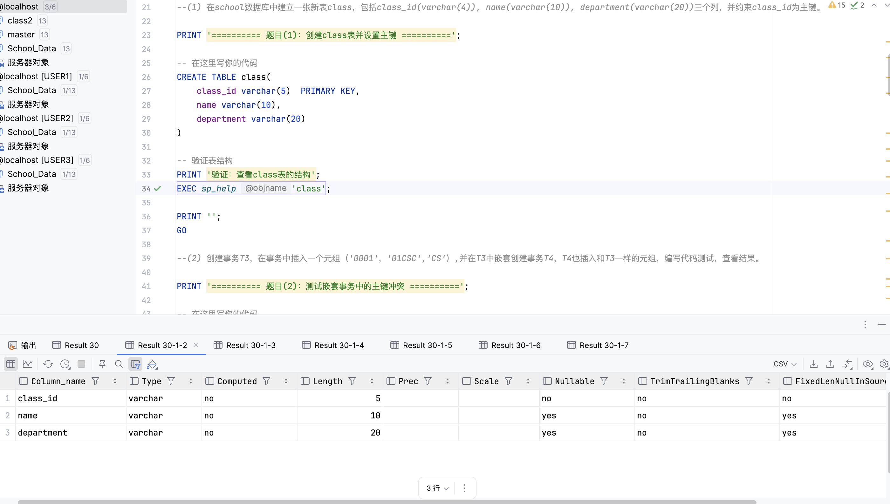
成功创建了class表，class_id列被设置为主键。从表结构可以看到，主键约束自动包含了NOT NULL约束和UNIQUE约束。
========== 题目(1)：创建class表并设置主键 ==========
验证：查看class表的结构
[2025-11-06 11:04:01] 在 2 s 518 ms (execution: 55 ms, fetching: 2 s 463 ms) 内检索到从 1 开始的 1 行SET XACT_ABORT OFF
BEGIN TRANSACTION T3
INSERT INTO class VALUES ('0001','01CSC','CS');
BEGIN TRANSACTION T4
INSERT INTO class VALUES ('0001','01CSC','CS'); -- 违反主键约束
COMMIT TRANSACTION T4
COMMIT TRANSACTION T3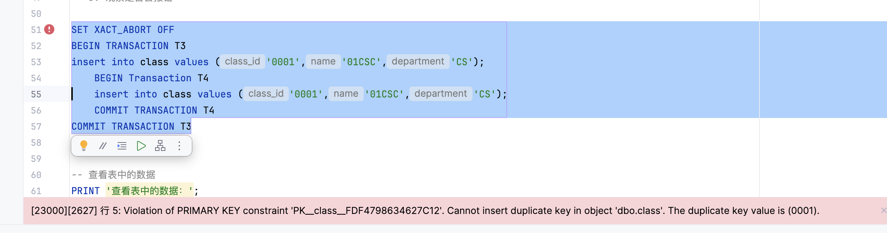
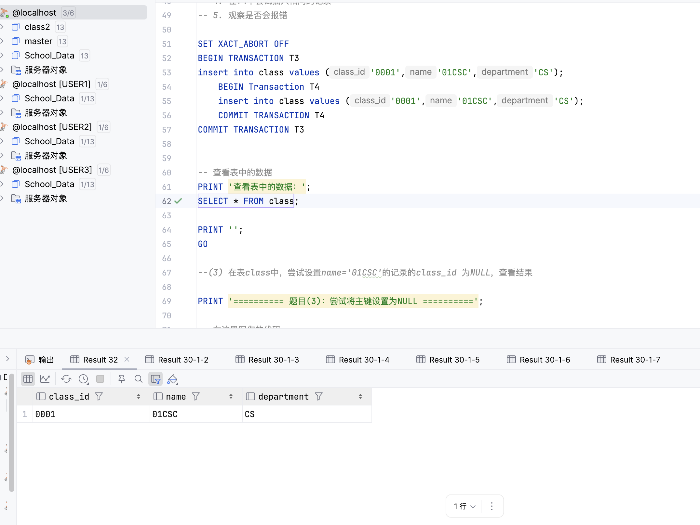
========== 题目(2)：测试嵌套事务中的主键冲突 ==========
[2025-11-06 11:04:01] [S0000][3621] The statement has been terminated.
查看表中的数据：
[2025-11-06 11:04:01] 19 ms 中有 1 行受到影响
[2025-11-06 11:04:01] [23000][2627] 行 15: Violation of PRIMARY KEY constraint 'PK__class__FDF4798636B93626'.
Cannot insert duplicate key in object 'dbo.class'. The duplicate key value is (0001).UPDATE class SET class_id = NULL WHERE name = '01CSC';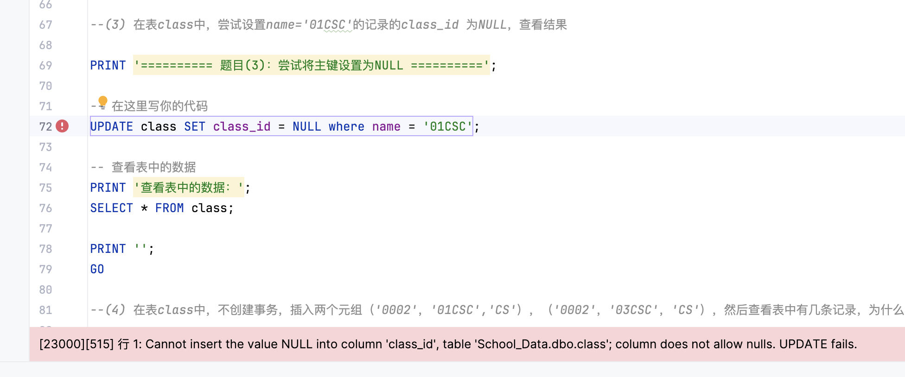
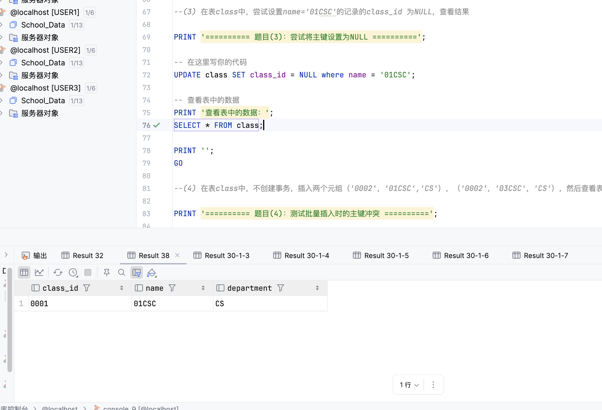
========== 题目(3)：尝试将主键设置为NULL ==========
[2025-11-06 11:04:03] [23000][515] 行 4: Cannot insert the value NULL into column 'class_id',
table 'School_Data.dbo.class'; column does not allow nulls. UPDATE fails.
[2025-11-06 11:04:03] [S0000][3621] The statement has been terminated.
查看表中的数据：INSERT INTO class VALUES ('0002','01CSC','CS');
INSERT INTO class VALUES ('0002','03CSC','CS');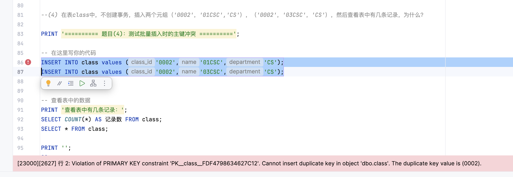
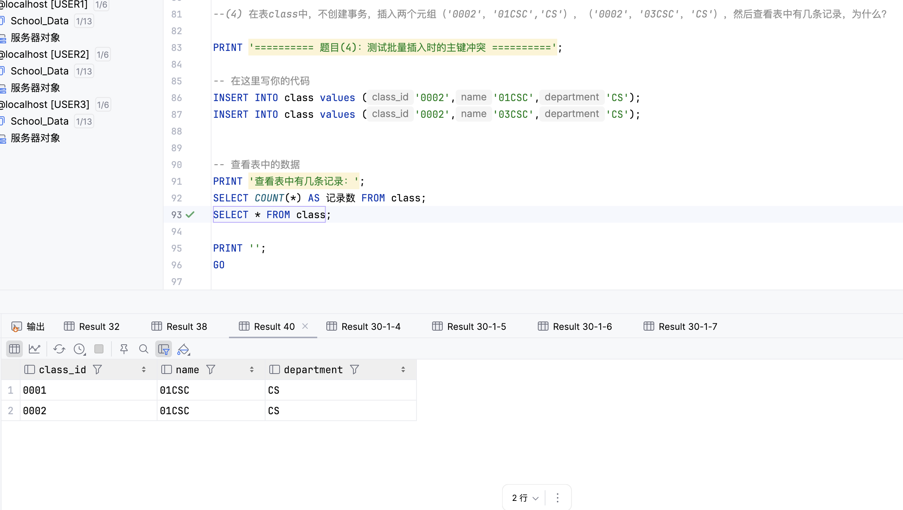
========== 题目(4)：测试批量插入时的主键冲突 ==========
[2025-11-06 11:04:03] [S0000][3621] The statement has been terminated.
查看表中有几条记录：
[2025-11-06 11:04:03] 11 ms 中有 1 行受到影响
[2025-11-06 11:04:03] [23000][2627] 行 5: Violation of PRIMARY KEY constraint 'PK__class__FDF4798636B93626'.
Cannot insert duplicate key in object 'dbo.class'. The duplicate key value is (0002).SET XACT_ABORT ON
BEGIN TRANSACTION T
INSERT INTO class VALUES ('0003','03CSC','CS');
INSERT INTO class VALUES ('0001','03CSC','CS'); -- 违反主键约束
COMMIT TRANSACTION T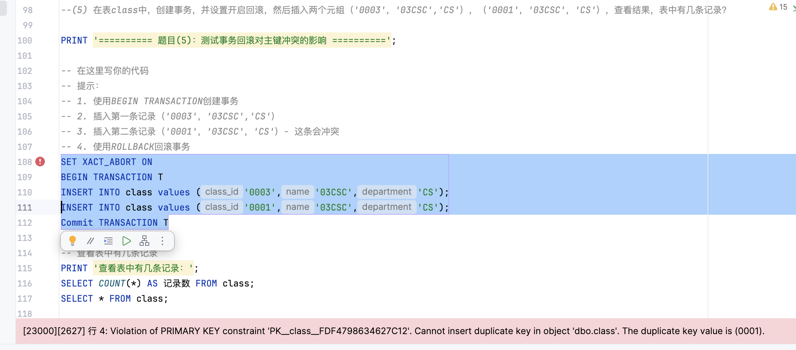
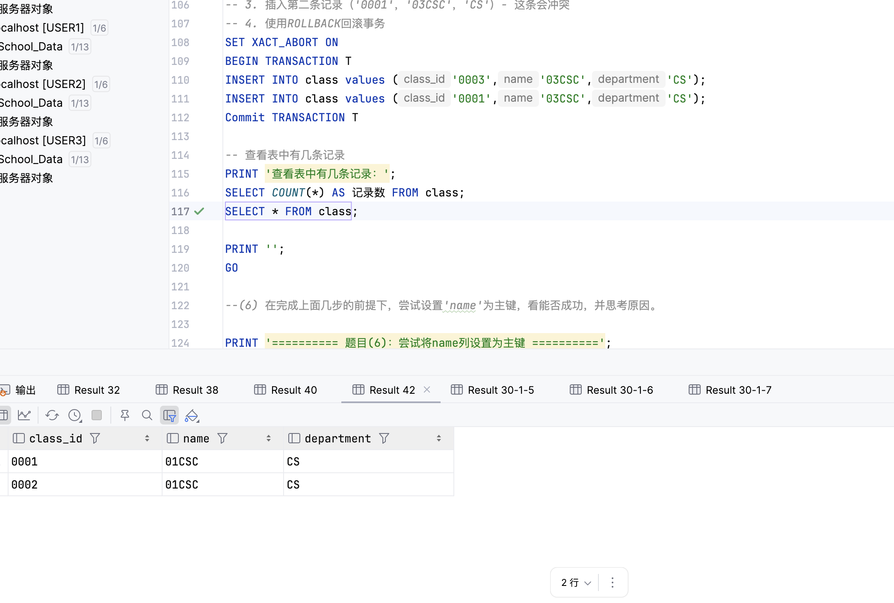
[2025-11-06 10:59:45] 21 ms 中有 1 行受到影响
[2025-11-06 10:59:45] [23000][2627] 行 4: Violation of PRIMARY KEY constraint 'PK__class__FDF4798634627C12'.
Cannot insert duplicate key in object 'dbo.class'. The duplicate key value is (0001).
[2025-11-06 11:00:18] 在 349 ms (execution: 4 ms, fetching: 345 ms) 内检索到从 1 开始的 2 行SET XACT_ABORT OFF
BEGIN TRANSACTION T
INSERT INTO class VALUES ('0003','03CSC','CS');
INSERT INTO class VALUES ('0001','03CSC','CS'); -- 违反主键约束
COMMIT TRANSACTION T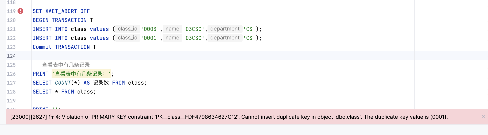
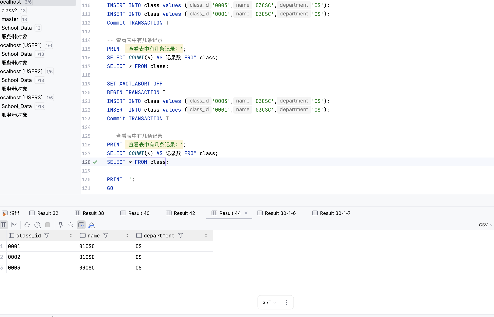
[2025-11-06 11:00:49] [S0000][3621] The statement has been terminated.
[2025-11-06 11:00:49] 14 ms 中有 1 行受到影响
[2025-11-06 11:00:49] [23000][2627] 行 4: Violation of PRIMARY KEY constraint 'PK__class__FDF4798634627C12'.
Cannot insert duplicate key in object 'dbo.class'. The duplicate key value is (0001).
[2025-11-06 11:01:08] 在 355 ms (execution: 4 ms, fetching: 351 ms) 内检索到从 1 开始的 3 行XACT_ABORT设置决定了事务中发生错误时的行为。ON模式下，任何运行时错误都会自动回滚整个事务，保证了事务的原子性。OFF模式下，错误只会终止当前语句，事务可以继续执行或提交，这给了开发者更多的控制权，但也需要更谨慎地处理错误。
ALTER TABLE class ADD CONSTRAINT class_name_pk PRIMARY KEY (name);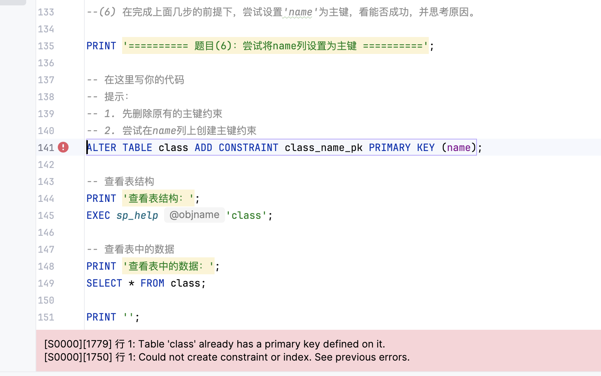
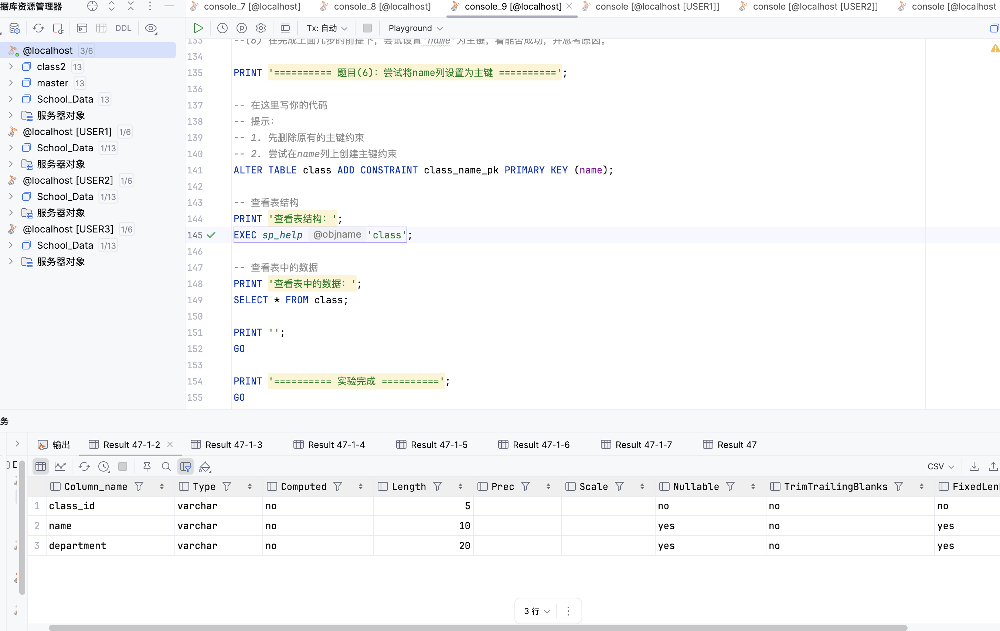
========== 题目(6)：尝试将name列设置为主键 ==========
[2025-11-06 11:02:21] [S0000][1779] 行 1: Table 'class' already has a primary key defined on it.
[2025-11-06 11:02:21] [S0000][1750] 行 1: Could not create constraint or index. See previous errors.正确的做法：
SELECT name FROM sys.key_constraints WHERE type = 'PK' AND parent_object_id = OBJECT_ID('class');ALTER TABLE class DROP CONSTRAINT [约束名];ALTER TABLE class ADD CONSTRAINT class_name_pk PRIMARY KEY (name);通过本次实验，我深入理解了主键约束的本质。主键约束实际上是两个约束的组合：NOT NULL约束和UNIQUE约束。在题目(3)中，当我尝试将主键列设置为NULL时，系统明确报错"column does not allow nulls"，这说明主键列自动具有NOT NULL属性。主键的这两个特性共同保证了实体完整性，确保每一行数据都有唯一标识。
题目(2)和(5)展示了事务处理中的错误控制机制。XACT_ABORT设置对事务行为有决定性影响。在OFF模式下，单个语句的错误不会导致整个事务回滚，这给了开发者更多的灵活性，但也要求更谨慎的错误处理。在ON模式下，任何运行时错误都会自动回滚整个事务，这更符合事务的原子性原则。在实际应用中，应该根据业务需求选择合适的模式。
题目(4)揭示了一个重要的概念：在没有显式事务的情况下，每条SQL语句都是一个独立的事务，执行成功后立即提交。这就是为什么第一条INSERT成功后，即使第二条INSERT失败，第一条记录也不会被撤销。这种行为在批量操作时需要特别注意，如果希望多条语句作为一个整体要么全部成功要么全部失败，必须使用显式事务。
题目(2)中的嵌套事务实验很有意思。虽然SQL Server支持嵌套事务的语法，但实际上内层事务的COMMIT并不会真正提交数据，只有最外层事务的COMMIT才会真正提交。内层事务的错误是否影响外层事务，取决于XACT_ABORT的设置。这个机制在复杂的存储过程中很有用，但也需要仔细设计错误处理逻辑。
题目(6)让我认识到，一个表只能有一个主键约束。这是关系数据库理论的基本规则，因为主键是表的唯一标识。如果需要在多个列上保证唯一性，应该使用UNIQUE约束而不是主键。而且，即使删除了原有主键，如果新列的数据不满足唯一性要求，也无法创建主键。
实体完整性是数据库完整性的基础。主键约束通过保证每行数据的唯一标识，使得我们可以准确地定位和操作每一条记录。在实际应用中，选择合适的主键非常重要。主键应该是稳定的、不可变的、简洁的。自增ID是常见的选择，但在某些场景下，业务字段的组合也可以作为主键。
通过这次实验，我总结了一些错误处理的最佳实践。在事务中，应该使用TRY-CATCH块来捕获和处理错误，而不是依赖XACT_ABORT的自动回滚。在批量操作时，应该使用显式事务来保证原子性。在设计数据库时，应该合理使用约束来防止无效数据的插入，而不是在应用层进行所有验证。
这次实验让我对SQL Server的事务处理机制有了更深入的理解。主键约束不仅仅是一个简单的唯一性限制，它涉及到事务处理、错误控制、数据完整性等多个方面。在实际开发中，正确理解和使用这些机制，对于保证数据的一致性和可靠性至关重要。